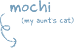
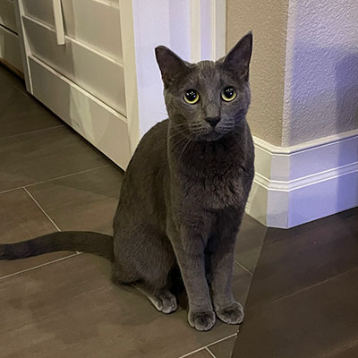
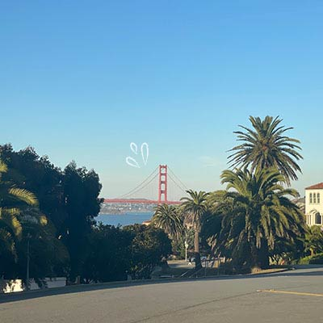
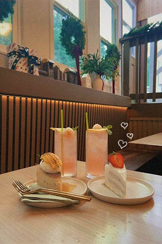
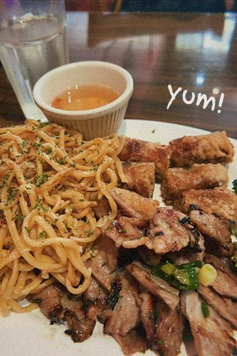

I recently graduated from the University of California, Davis, double majoring in Communications and Design. My focus was in graphic design, but I got to experiment with other design areas such as ux/ui and web design. Other than design, I love traveling and trying new food / boba spots. Also, I am a big fan of otters and cats (especially chonky ones).
SKILLS
Graphic Design
- Illustrator
- Photoshop
- Lightroom
- InDesign
UX/UI
- Figma
- Adobe XD
Programming Languages
- HTML
- CSS




